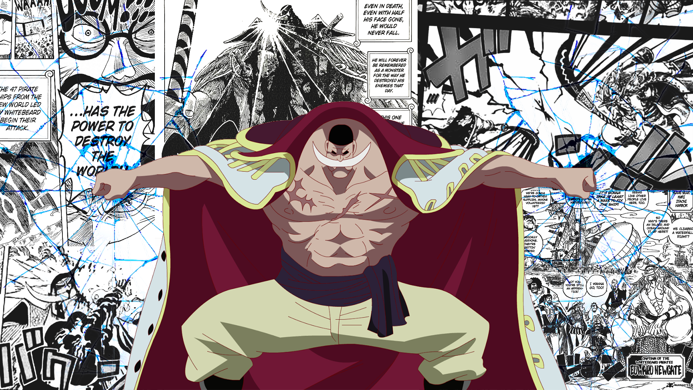

Edward Newgate
The pirate who was a father to us all

This is the story of the strongest man in the world. Whitebeard A.K.A Edward Newgate.
Whitebeard Feats
- Created two massive tidal waves in one blow
- Shattered two massive walls of ice (made frozen from Whitebeard's previous attack)
- Destroyed Navy HQ at Marineford
- Haki clash with Gol D. Roger that shook the entire island
- Sustained 267 sword wounds, 152 bullet wounds, 46 cannonball wounds, and one fire punch that halved his head - but in his entire life, he never received a wound on his back
- Died standing up